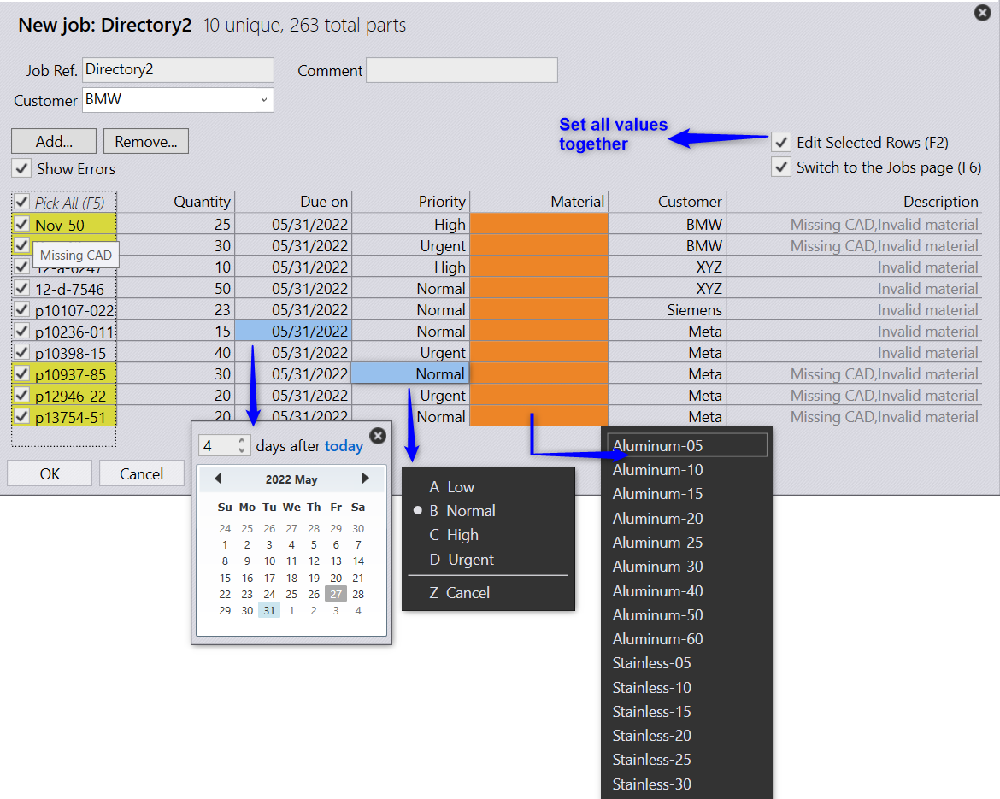

Spreadsheet Mapping Error
When a new spreadsheet is imported, Praxis validates and job item entries and highlights the error rows in the New Job dialog.

Types of possible validation errors:
- Invalid quantity: The job item has zero or negative quantity.
- Invalid or Missing Material: The CSV material entry is missing, or it cannot be resolved as one of Praxis materials.
- Invalid due date: Due date entry is missing or points to the past.
- Blank part: The CAD entry from CSV does not exist in the Praxis library or in the CAD lookup directories
Types of possible validation warnings:
- Material mismatch: The CAD material entry from CSV is different from its corresponding part's material in the Praxis library.
- Blank part: The CAD entry from CSV does not exist in the Praxis library or in the CAD lookup directories.
(If factory • settings • job • create a blank part … is enabled, the blank part is marked as warning, if not it is marked as an error)
Check Show Errors checkbox to toggle the error description column and Switch to the Jobs to switch to the Jobs page after a new Job is created.